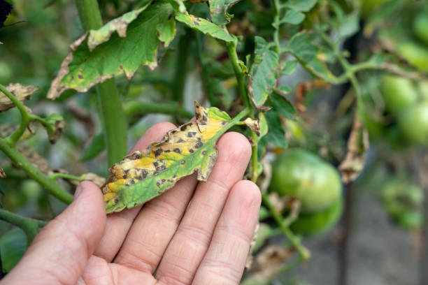

Pest and Disease Identification

Aphids
Aphids are small sap-sucking insects that can cause significant damage to crops by feeding on plant juices and transmitting diseases.
Management Strategies:
- Introduce natural predators like ladybugs.
- Use insecticidal soaps or neem oil sprays.
- Remove infected plants to prevent the spread.

Late Blight
Late Blight is a fungal disease that affects potatoes and tomatoes, causing dark lesions and rot on leaves and fruit.
Management Strategies:
- Use disease-resistant plant varieties.
- Avoid overhead irrigation to minimize wet leaves.
- Apply fungicides early to prevent infection.
Whiteflies
Whiteflies are small, winged insects that feed on plant sap, weakening plants and spreading viral diseases.
Management Strategies:
- Introduce beneficial insects like parasitic wasps.
- Use sticky traps to capture adult flies.
- Spray with horticultural oils or insecticidal soaps.